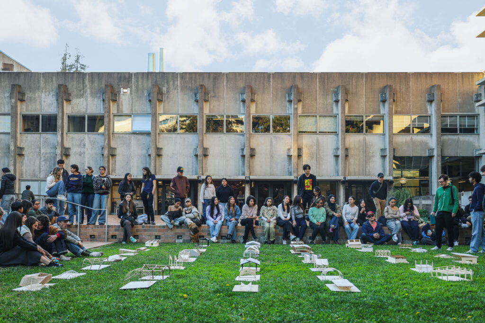
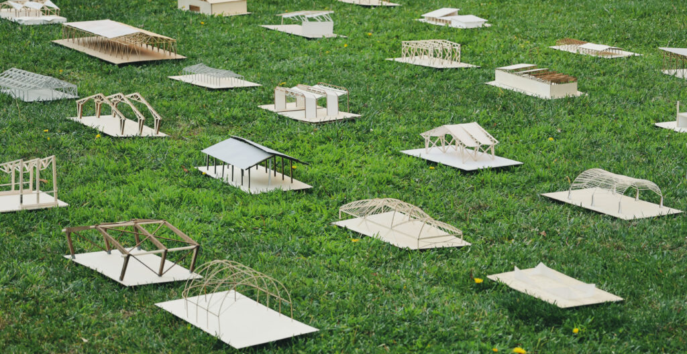
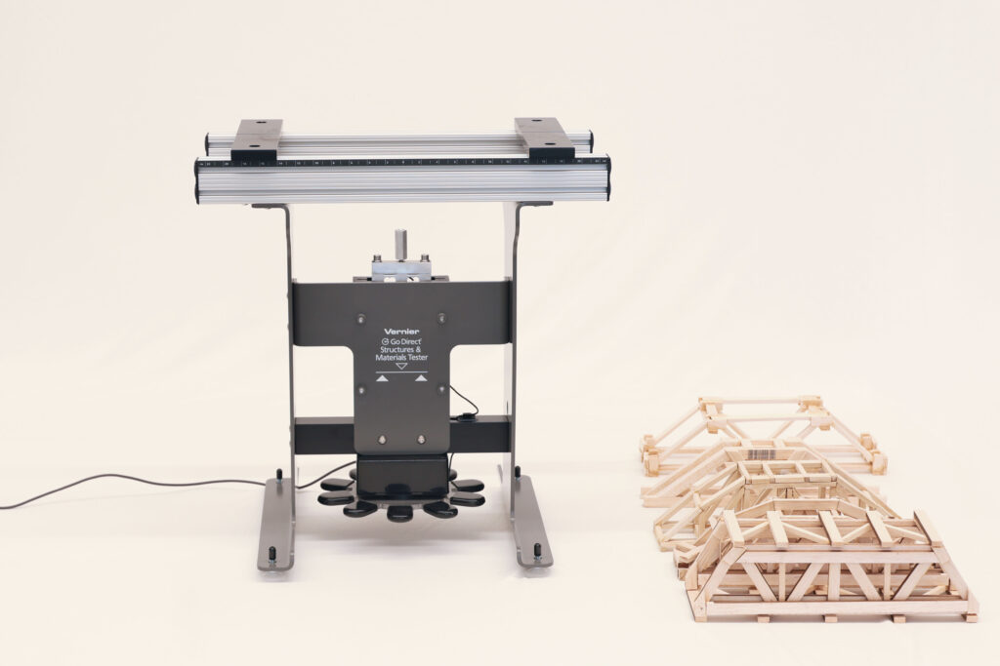

Teaching
ARCH 150
Introduction to Structural Design
Structural design is fundamental to how we build. Structural principles and material behavior determine the shape of our built environment, and their knowledge is essential for every future architect. In the current climate crisis, it is more essential than ever before to challenge and limit the use of some of the largest greenhouse gas emitters of our planet: construction materials. How can we build more efficiently and create buildings where lower material use and architectural expression go together?
UC Berkeley, B.A. in Architecture, core curriculum.
Course description and images: Spatial Systems Lab.
Class activities


